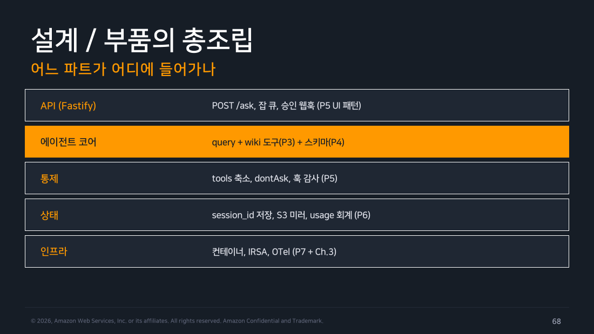
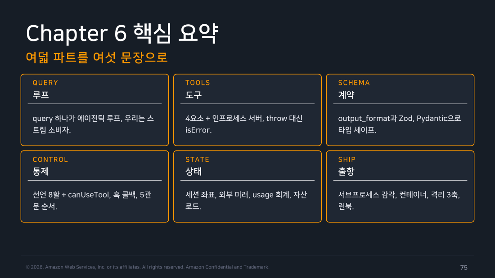
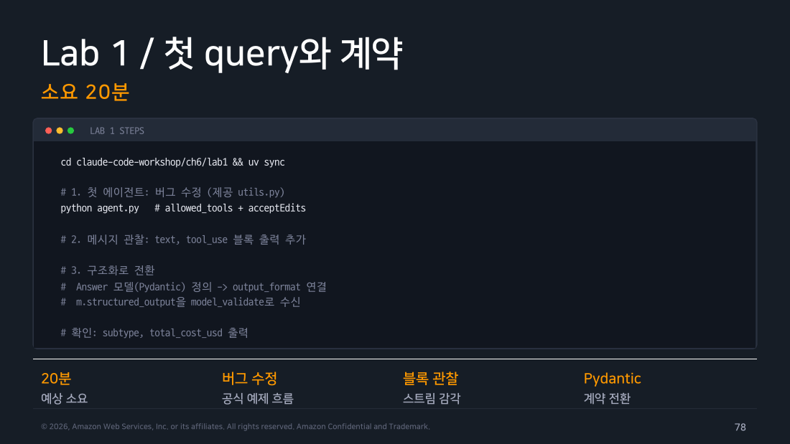
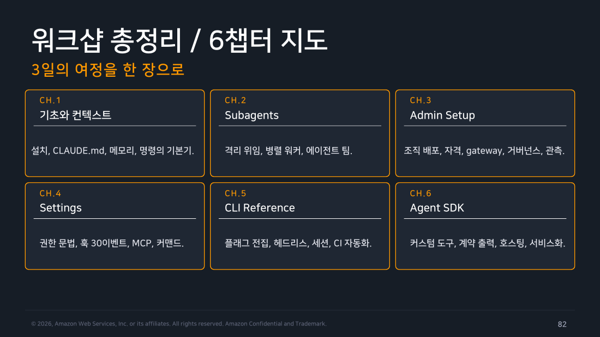

Part 8 — 캡스톤과 Labs¶
한 줄 요약¶
캡스톤은 새 프레임워크를 더하는 일이 아니라, query·도구·출력 계약·권한·세션·관측을 한 서비스 경계 안에 조립하는 연습입니다.
왜 알아야 하나¶
Part 2~7에서 겪은 네 가지 실패 — 스키마 거부, 턴 상한 부족, 감사 로그 누락, 레플리카 재개 실패 — 는 한 서비스 안에서 동시에 터질 수 있습니다. "사내 위키 에이전트"라는 이름만으로는 이걸 어디서 막을지 설계가 나오지 않습니다. 문서를 찾는 함수, 답의 JSON 모양, 쓰기 승인, 이전 대화, 요청 로그가 각각 어디에 놓이는지 연결해야 구현 가능한 서비스가 됩니다.

▲ 교재 슬라이드 68 — 설계 / 부품의 총조립
1. wiki-agent 조립도¶
flowchart TD
A["HTTP 요청 + 사용자 질문"] --> B["query()\nmaxTurns·settingSources"]
B --> C["search_wiki 도구\nin-process MCP"]
B --> D["answer JSON Schema"]
B --> E["PreToolUse / canUseTool"]
B --> F["session_id ↔ 사용자ID 매핑(자체 DB)\n+ sessionStore로 트랜스크립트 미러링"]
D --> G["API 응답 + OTel 관측"]
F --> G
style B fill:#e3f2fd,stroke:#1976d2,color:#000
style G fill:#e8f5e9,stroke:#388e3c,color:#000이 조립도에서 Part 3의 search_note는 search_wiki가 됩니다. Part 4의 status enum은 answer, citations, confidence 같은 API 계약으로 바뀝니다. Part 5의 Write 차단은 위키 수정이나 티켓 생성처럼 실제 부작용이 있는 도구 앞에 둡니다.
구현 순서로 풀면 이렇습니다. HTTP 핸들러가 사용자 ID로 이전 session_id를 우리 앱의 자체 DB에서 조회합니다 → query({ prompt, options: { resume, sessionStore, outputFormat, permissionMode: 'dontAsk', allowedTools: ['mcp__wiki__search_wiki'] } })를 부릅니다 — 여기서 sessionStore는 세션 ID를 조회하는 테이블이 아니라, SDK가 대화 트랜스크립트 자체를 S3·Redis 같은 외부 저장소로 미러링하도록 넘기는 어댑터입니다(Part 7) → result의 structured_output(answer/citations/confidence)을 그대로 API 응답으로 돌려줍니다 → 받은 session_id는 우리 앱의 자체 DB에 다시 써서, 같은 사용자의 다음 요청이 이어받게 합니다. 사람이 승인 버튼을 눌러 줄 수 없는 서비스 계정이니 권한 모드는 dontAsk로 두고 허용 도구는 search_wiki 하나로 좁혀 사고 범위를 줄입니다.

▲ 교재 슬라이드 75 — 핵심 요약
2. Task 0~4 실행 결과¶
Task 0은 SDK 0.3.260과 Zod 4.5.4 설치에 성공했습니다. 기본 npm 캐시는 root 소유 파일 때문에 실패했고 --cache ./npm-cache로 우회했습니다. /status는 미지원이었지만 Task 1 query가 기존 인증으로 성공했습니다.
Task 1은 성공했습니다. hello.mjs는 2턴, $0.1208436으로 이 작업 폴더를 읽고 답했습니다. assistant의 text와 result의 비용·session ID를 분리해 읽는 흐름을 확인했습니다.
Task 2도 성공했습니다. TTY에서 실행하자 두 번째 질문이 첫 대화의 이름을 정확히 기억했습니다 — sessionId를 갱신해 resume에 넘기는 세 줄이 실제로 대화를 이어줬습니다. 다만 대화형 stdin을 파이프로 밀어 넣었을 때는 ERR_USE_AFTER_CLOSE가 발생해 랩이 전제한 TTY 환경이 왜 필요한지도 함께 확인했습니다.
Task 3 역시 성공했습니다. mcp__shelf__search_note만 허용해 회식과 금요일 배포 규칙을 노트에서 조회했습니다. 반환된 근거에 과거 일정이 들어 있어 도구 응답 자체와 "다음"이라는 질문의 시간 전제는 분리해서 읽어야 함도 확인했습니다.
Task 4도 성공했습니다. 랩 원문의 maxTurns: 4로는 첫 점검이 Reached maximum number of turns (4)에 걸렸습니다(num_turns는 5로 기록). 8로 올려 다시 돌리자 1차 점검은 OK였고, 상태 파일을 DOWN으로 바꾼 2차 점검은 "OK였는데 지금은 DOWN"이라는 변화와 원인 후보·조치까지 정확히 짚어냈습니다.

▲ 교재 슬라이드 78 — Lab 1

▲ 교재 슬라이드 82 — 워크샵 총정리
3. 교재·랩·현행 문서의 대조 결과¶
- 랩의 언어 가정: PDF 기획의 Python 우선 가정과 달리 실제 핸즈온랩은 Node.js/TypeScript와 Zod로 구성돼 있었습니다. PDF가 가리키는
ch6/lab1경로가 없다고 실습 자산이 없는 건 아닙니다. 완전한 Task 0~4는ccw-hands-on-lab/ClaudeCode_Ch6_HandsOnLab.html에 있습니다. - 패키지명: 현재 TypeScript 패키지는
@anthropic-ai/claude-agent-sdk입니다. 구claude-code-sdk표기는 마이그레이션 대상입니다. - settingSources: 랩은 기본 미로드라고 설명하지만, 현행 문서는 생략 시 모든 파일시스템 source를 읽는다고 합니다.
[]가 격리 선택입니다. - 권한 모드: 교재 Ch6의 다섯 가지 표기는 현행 SDK의 여섯 가지와 다릅니다. W1·W4에서 확정한 여섯 가지에 맞춥니다.
- 구조화 출력: TS
outputFormat, Pythonoutput_format모두 지원합니다. Zod 4 기본 draft 2020-12는 현행 CLI에서 거부돼 draft-7 변환이 필요했습니다.
흔한 오해 바로잡기¶
"실습 범위에서 뺀 항목은 이 챕터가 실패했다는 뜻이다" — 아닙니다. 컨테이너 빌드(Docker 미설치)와 Kubernetes 배포는 처음부터 범위 밖으로 정한 것이고, Bedrock 실배포는 W3부터 이어진 AWS 쿼터 승인 대기 때문에 여전히 확인하지 못한 것입니다 — 어느 쪽이든 시도했다가 실패한 게 아닙니다. 반대로 Task 4처럼 원인이 확인된 실패(maxTurns 부족)는 값을 올려 재실행해서 실제로 해결했습니다.
정리¶
6주차의 마지막 코드는 짧았지만, 그 코드 주위의 계약은 짧지 않았습니다. SDK는 라이브러리 호출 하나로 시작합니다. 그러나 실제 서비스가 되려면 반환 메시지의 의미, 도구의 권한, 스키마의 draft, 세션의 위치, 실행 환경의 쿼터까지 함께 확인해야 합니다.
이번 챕터에서 범위 밖으로 남긴 건 컨테이너 빌드(Docker 미설치)뿐입니다. 실패를 감춘 빈칸은 아닙니다. 이번 정리에서 다루지 않기로 정한 경계입니다.
출처¶
- Claude Code Deep Dive Workshop — Chapter 6 / Part 8~9: 실전 프로젝트와 Recap & Labs (슬라이드 68~84)
- 공식 문서: TypeScript SDK, SDK permissions